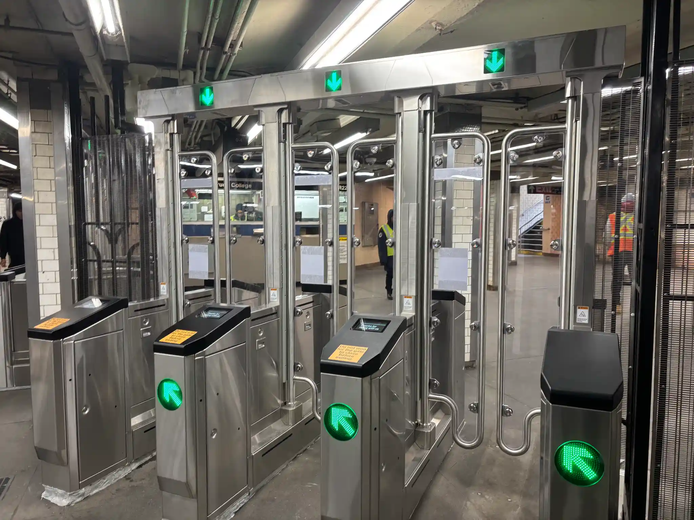

New York commuters are starting to encounter a new physical barrier in their daily routine, the MTA's Modern Fare Gates. This seemingly minor change is part of a multi-million dollar pilot program that, if successful, will lead to a full system overhaul across the city by 2029.
For the everyday rider, this costly change is already raising questions about effectiveness amidst the fact that these new gates are gradually replacing the familiar turnstile before our very eyes and the data to support this pilot is looking thin at best.
According to the MTA’s ridership data for February, April and May of this year, there was no statistically significant difference in ridership from the installation of the fare gates to the year prior, before they were installed. The average amount of ridership for February, March and April of 2025 to Baruch College- 23rd St. station was 528,094 and in 2026 it was 553,744. The average ridership increase of 25,000 riders is approximately a 4.55% increase of ridership in this one station.
The MTA is claiming that the installation of these gates has reduced fare evasion by as much as 20%-70% in stations who are participating in the pilot. This sample data is based on a week of data for seven unnamed stations. This data has not become publically available yet for independent analysis. Additionally, the faregate pilot cannot be held solely responsible for the reduction of fare evasion as the MTA have also begun to replace emergency exit gates with wheelchair accessible gates that can be remotely controlled. The MTA has previously reported that emergency exit gates are responsible for over half of all evasion.
Critics of the pilot lay beyond its effectiveness but about its repercussions for the future of surveillance in New York City. The technology behind the faregates has not been fully explained and requests from the MTA have been met with no comment. The fare gates use AI technology to detect objects and people as a measure to crackdown on fare evasion, however the full details on how this works or how it stores people’s data has been left unanswered.
“It’s highly concerning how the MTA could store or share this data,” said Will Owen, the Communications Director for the Surveillance Technology Oversight Project or S.T.O.P., a group advocating against discriminatory surveillance technologies. “How they could build a perpetual log of transit riders’ movements, their physical descriptions and other sensitive information. It’s highly concerning how this data could end up in the hands of law enforcement,” he said.
The faregate program first installed its new gates at the 23rd St- Baruch College station on the 6 line on Jan. 21, one of five stations receiving the initial pilot. These faregates, designed and inspired by similar gates from the SEPTA transit system in Philadelphia and the BART system of Northern California, measure nearly 6 feet off the ground. The purpose of the design seems to make the height be an obstruction to deter passengers from jumping over the turnstile. Jumping the turnstile along with the other methods of fare evasion, has costs the MTA over 350 million dollars in 2024.
Ridership and fare evasion are two different units of measurement but they are related. If the MTA is planning on deterring turnstile jumpers to pay for rides at a significantly higher degree, just the faregate pilot may not be enough. While this station is one of the first and longest who have had the faregate installed, this data is one time period for one station and cannot reflect the whole picture.